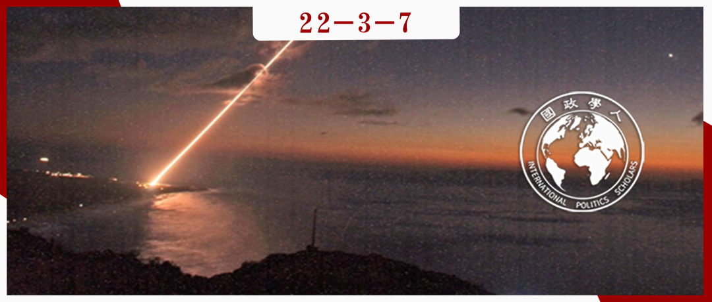

收录于合集

核不对称下的威慑:
萨德与韩半岛导弹防御系统的未来
作者： Inwook Kim & Soul Park，新加坡管理大学&新加坡国立大学政治科学系。
编译： 李思（国政学人编译员，首尔大学国际大学院国际区域学专业）
来源： Inwook Kim & Soul Park. (2019). Deterrence under nuclear asymmetry: THAAD and the prospects for missile defense on the Korean peninsula, Contemporary Security Policy , 40:2, 165-192, DOI: 10.1080/13523260.2018.1558750

导读
本文通过两个问题探讨韩半岛导弹防御系统的未来。其一，萨德的部署能否针对最直接、最关键的目标—朝鲜导弹来保护韩国。本文认为，对于萨德防御能力的广泛传播的“有限乐观论（qualified optimism）”被夸大了。为了说明这一点，本文通过动态分析的框架，表示更多的武器给予的安全是取决于其他人如何应对的。因此，本文将分析重点放在了朝鲜为了遏制萨德的部署，可以采取的应对措施的可行性、成本和实效性上。本文分析了三种对策，即使用诱饵、（导弹）滚翻和螺旋运动、以及导弹数量优势。这些对策使用起来相对容易，但却很难应对。它们的可行性实质上使萨德的防御价值在有限的时间内减弱。这一评价符合传统观点：即，导弹技术完全更倾向于进攻而不是防御，并对通过构建导弹防御系统来防御朝鲜导弹的技术可行性提出了深刻的质疑。
本文探讨的第二个问题：考虑到导弹防御系统的价值减弱，在朝鲜核导弹威胁日益扩大的情况下，该如何确保韩国的国家安全。本文认为，目前韩美同盟不需要增加主要防御体系。从目前和预测的战斗力均衡和可信度等方面来看，美国的延伸惩罚威慑仍然足够阻止朝鲜进行核打击或常规导弹发射。目前，韩半岛没有地理上的差距，导弹防御系统几乎没有增加美国现有的核保护伞。本文认为韩半岛萨德部署的防御性低效、而且可能引起潜在的军事反效果，但本文并不完全反对部署。相反，本文的分析表明，韩美应该超越导弹防御系统的必要性，去寻求萨德的正当性。并且，韩美同盟应该对萨德的拦截能力保持警惕，避免过于信任和依赖。
摘要
2016年在韩国部署萨德引发了众多激烈的政治问题和争议。这使得分析政策变得困难。本文分解并重新讨论了两个基本问题。一、萨德能否真正保护韩国免受朝鲜导弹的攻击。我们优先考虑了可以击退萨德的三种对策，即使用诱饵、（导弹）滚翻和螺旋运动以及导弹数量优势，来挑战现有的“合理化乐观论”（qualified optimism）。这三种对策的制定成本相对较低，但却很难应对。第二，本文也评估了韩国应对朝鲜导弹的最佳国家安保方案。通过研究能力均衡和可信度/承诺（credibility/commitment）的问题，得出的结论是，即使韩国不提高目前的导弹防御能力，美国的延伸惩罚威慑（extended deterrence by punishment）仍然足够应付朝鲜。
编译
一
萨德的防御能力：支持v.s.反对
支持的原因：
**
**
首先，萨德是目前最先进的BMD（导弹防御系统）技术之一，这一点通过包括2017年7月对中程弹道导弹（IRBM）的第一次和多次试验中100%的成功率得到了证明。 最重要的是，部署萨德可以覆盖PAC-3等其他BMD系统无法达到的高空，形成“分层防御”，从而提高成功拦截导弹的可能性。
第二，由于导弹拦截能力增强，支持者主张萨德增强了韩美同盟的威慑力。 萨德的首要目的不在于实际战争时的导弹拦截。但是如果萨德使朝鲜核打击成功的可能性降低，那么则会影响朝鲜的战略选择。
反对者的声音：
**
**
首先，批评者指出，萨德的威慑作用并不像支持者所鼓吹的那样可靠。 主要原因是，萨德系统存在技术缺陷和未知因素。首先，专家们怀疑，由于试验是在有所控制的环境下进行的，然而在实际战斗情况下，萨德的有效性能否转化为有效的性能是存疑的。就好比，“在试验场内或在家中运转良好的东西在实际应用时并不总是那么顺利”。
第二，即使承认萨德技术上的能力，它的威慑能力与实际需求仍存在相当大的差距。 例如，人口达1000万的韩国首都首尔，以及DMZ（非军事区）附近的韩国兵力大部分都不在拦截范围内。据悉，如果从朝鲜黄州向韩国第二大城市和重要军事基地—釜山发射导弹，将在星州（萨德在韩国的部署地）上空飞行150公里以上，而这超过了萨德的拦截范围。
第三，地理原因使萨德无法拦截的低空导弹反而对平壤更加有利。 低空导弹对提高准确度和降低技术难度（没有出入大气层）也很有利。因此有人评价说，朝鲜向韩国发射高空导弹的可能性很小，所以萨德在实际战争中使用的可能性并不大。
有限乐观心态（Qualified optimism）
**
**
虽然韩国对于萨德部署的支持者与反对者之间的分歧仍然很大，但他们就萨德防御能力两大基本共同点达成了共识。一是，导弹防御越多，对国家安全越有利。反对者们认识到，如果没有萨德，韩国的高空将完全无人防守。因此，追加构筑防御系统可以为韩国的导弹防御提供额外的防御层和心理上的安慰。另外一种共识是，萨德还远远没有完善成可以应对朝鲜导弹的系统。支持者们承认萨德有技术缺陷，实现完全的导弹防御是不可能的。简言之，支持者和反对者对萨德对韩国防御能力的作用持一种有限的乐观心态。 虽然萨德并不完美，但两者都认为，它对韩国导弹防御有百利而无一害。
二
动态分析：抓住问题的关键
本文没有遵循以往强调军事技术和能力的惯例，而是分析朝鲜对萨德部署可能的应对措施。具体说来，本文探讨了以下问题：朝鲜可能采取的应对措施是什么？这些措施有多容易被朝鲜获取，成本有多高？以及，在遏制萨德方面，朝鲜的技术规格有多么有效？
三
朝鲜可能采取的反制措施
萨德对策分为回避（avoidance）和操纵（manipulation）两种形式。首先，回避对策是指飞行萨德高度或雷达探测范围之外的导弹。但据悉，萨德只覆盖了120度，星州的雷达朝北，其余240度完全无法探测到。考虑到韩半岛的地理位置，通过潜射弹道导弹（SLBM）可以采取回避措施。如果所有核弹头都作为潜射导弹发射，韩国将无法阻止它们发射到韩国领土。但是潜射导弹的技术非常复杂，很难轻易使用。事实上，人们普遍认为，朝鲜潜射导弹的开发和部署仍非常落后，距离成功开发和部署还有数年时间。
相反，利用萨德系统技术的缺陷，以击退萨德系统为目的的操纵对策则更容易实现，费用相对低廉，效果也很好。 本文讨论了三种应对策略：使用诱饵、（导弹）螺旋和翻滚，以及数量优势。第一种反制方法是通过发射诱饵使萨德的雷达系统无法辨别真正的导弹头。第二种反制萨德系统的思路来源于导弹飞行轨迹投射技术。萨德存在一个局限性，即，只能拦截到稳定、直线飞行的导弹。导弹必须保持旋转稳定，这样它就不会翻滚或螺旋。因此，如果朝鲜的导弹以不可预测的速度飞行，而且在空中螺旋或翻滚运动不稳定，萨德就几乎不可能拦截到。最后一个简单的反制措施是，在导弹的数量上超过萨德的拦截弹头。但采取数量优势的措施需要承担成本和风险。因此，学者和分析家往往怀疑萨德能否承受住朝鲜可能的反制措施，因此萨德在韩国面对着各种负面评价，比如太有限、太温和及太不可靠等等。
四
韩半岛的延伸核威慑力
考虑到朝鲜可以轻易采取的相对容易的反制措施和萨德系统相关的技术缺陷，本文主张应该把重点放在加强目前韩美同盟在东亚的延伸核威慑框架上。与一般威慑力旨在防止对本国领土的攻击不同，延伸威慑力旨在影响对手的成本计算，特别是用隐含或明确的报复威胁来劝阻他们不要采取攻击，这也是冷战后美国对亚太地区的安保政策的核心。
扩张威慑有两种变体—“拒止”（denial）和“惩罚”（punishment）。延伸拒止威慑旨在暗示敌人，如果它进攻，它将无法实现其军事目标。第二种“惩罚”方式则通过威胁大规模报复来打消敌国进攻盟友的意图。，美国的安全保证、防卫承诺和核声明政策（nuclear declaratory policy）等都是第二种扩张威慑的体现。在军事理论范围内，本文认为，惩罚比起拒止为应对朝核和导弹威胁提供了更可行、更廉价的选择。因为拒止代价高，并且容易刺激朝鲜，从而导致军备竞赛。
延伸威慑的能力和可信度
总的来说，在目前的国际体系中，美国的核武器能力仍然是独一无二的。虽然朝鲜在过去几年中确实在弹道导弹技术上取得了飞速进展，但在2017年的最新试验中，朝鲜还没有掌握和证明其洲际导弹具备打击美国的能力。美国认为，为了保持美国的威慑力，美国需要使朝鲜信服，即便会损害国家利益，美国也愿意承担高昂的代价来捍卫盟国。因此，即使是在后冷战时代，美国的国家利益依然与韩半岛地区关联。只要美国向韩国提供同盟安全保障（alliance- related assurance），延伸核威慑仍然是一个可信赖的选择。这样可以增强美国对盟国安全保证的有效性，并进一步增强对拥有核武器的朝鲜进行延伸核威慑的可信度。
总而言之，以延伸惩罚威慑维持现状似乎是韩国克服核不对称带来的问题的有效且相对成本低廉的手段。因此，华盛顿和首尔的决策者不应该对朝鲜日益增长的核导能力做出过激的反应，而应该致力于通过宣言性声明和加强同盟体系来提高现有延伸威慑框架的可信度。
词汇整理
威慑 Deterrence
低空导弹 Low-altitude missile
洲际弹道导弹
ICBM (Intercontinental Ballistic Missile）
导弹防御系统
BMD (Ballistic Missile Defense) System
末端高空区域防御系统
THAAD (Terminal High Altitude Area Defense）
潜射弹道导弹
SLBM (Submarine-launched ballistic missile)
审校 | 闫一苇 徐一凡
排版 | 牛子悦 彭凌懿
文章观点不代表本平台观点，本平台评译分享的文章均出于专业学习之用, 不以任何盈利为目的，内容主要呈现对原文的介绍，原文内容请通过各高校购买的数据库自行下载。

国政学人
支持学术公益与知识传播
微信扫一扫赞赏作者 __赞赏
已喜欢，对作者说句悄悄话
取消 __
发送给作者
发送
最多40字，当前共字
上一页 1/3 下一页
长按二维码向我转账
支持学术公益与知识传播
受苹果公司新规定影响，微信 iOS 版的赞赏功能被关闭，可通过二维码转账支持公众号。